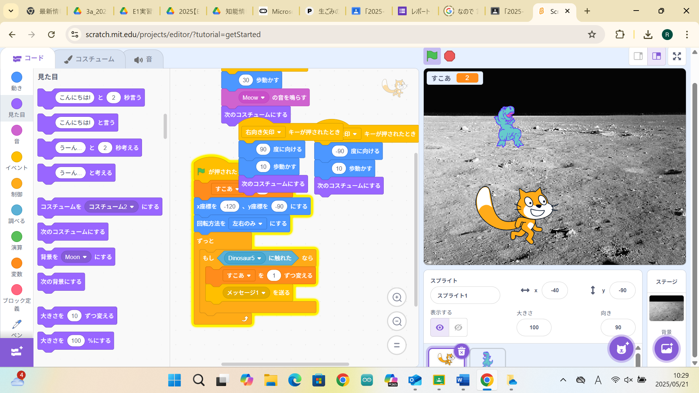

1週目のレポート ： 公大高専１年実習I-1
3a班8番 YUME
第1週目
1-1 サイエンスアート
1.内容
この授業ではスクラッチでのプログラミングのしかた、拡張機能の追加のしかたなどを学び、
学んだことを用いてサイエンスアートを作りました。
2.感想
スクラッチを使ったプログラミングは以前少しだけしたことがあったのですが拡張機能を使ったのは初めてだったので使い方を知れたことも含めて新鮮でした。
1-2 ゲーム

1.内容
この授業では音の編集のしかた、スプライトの追加のしかた、変数の追加のしかたなどを学び、
学んだことを用いて落ちてきたものをキャッチするゲームを作りました。
2.感想
学習した内容自体は既にやったことがあるものも多かったので正直あまり面白いとは思えなかったのですが、
友達と作ったゲームを見せ合ったことは楽しかったです。
1-3 ホームページ作成
私のホームページ
1.内容
この授業ではgithubのアカウントの作り方、githubを用いたホームページの作り方などを学び、
学んだことを用いてホームページを作成した。
2.感想
ホームページの作り方を丁寧に教えてもらったのでとても分かりやすく、
初めてでもわりとできたので嬉しかったです。
各ページへのリンク
1週目のレポート
2週目のレポート
3週目のレポート
私のホームページ